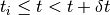
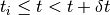

Base classes¶
We have two sets of base-classes. The first is used in order to represent time
and inherits from np.ndarray, see Time. The other are
data containers, used to represent different kinds of time-series data, see
Time-series
Time¶
Experimental data is usually represented with regard to relative time. That is, the time relative to the beginning of the measurement. This is in contrast to many other kinds of data, which are represented with regard to absolute time, (one example of this kind of time is calendaric time, which includes a reference to some common point, such as 0 CE, or Jan. 1st 1970). An example of data which benefits from representation with absolute time is the representation of financial time-series, which can be compared against each other, using the common reference and for which the concept of the work-week applies.
However, because most often the absolute calender time of the occurence of events in an experiment is of no importance, we can disregard it. Rather, the comparison of the time progression of data in different experiments conducted in different calendar times (different days, different times in the same day) is more common.
The underlying representation of time in :module:`nitime` is in arrays of dtype
int64. This allows the representation to be immune to rounding errors
arising from representation of time with floating point numbers (see
[Goldberg1991]). However, it restricts the smallest time-interval that can be
represented. In :module:`nitime`, the smallest discrete time-points are of size
:attribute:`base_unit`, and this unit is picoseconds. Thus, all underlying
representations of time are made in this unit. Since for most practical uses,
this representation is far too small, this might have resulted, in most cases
in representations of time too long to be useful. In order to make the
time-objects more manageable, time objects in :module:`nitime` carry a
:attribute:`time_unit` and a :attribute:`_conversion_factor`, which can be used
as a convenience, in order to convert between the representation of time in the
base unit and the appearance of time in the relevant time-unit.
The first set of base classes is a set of representations of time itself. All
these classes inherit from np.array. As mentioned above, the dtype of
these classes is int64 and the underlying representation is always at
the base unit. These representations will all serve as the underlying machinery
to index into the TimeSeries objects with arrays of time-points. The
additional functionality common to all of these is described in detail in
Time-series access. Briefly, they will all have an at() method,
which allows indexing with time-objects of various kind. The result of this
indexing will be to return the time-point in the the respective
TimeSeries which is most appropriate (see Time-series access
for details). They will also all have an index_at() method, which returns
the integer index of this time in the underlying array. Finally, they will all
have a during() method, which will allow indexing into these objects with
an Interval object. This will return the appropriate times corresponding
to an Interval object and index_during(), which will return the
array of integers corresponding to the indices of these time-points in the
array.
There are three types of Time base classes: TimeArray NonUniformTime, and UniformTime. time_table captures the essential differences between them.
TimeArray¶
This class has the least restrictions on it: it will be a 1d array, which
contains time-points that are not neccesarily ordered. It can also contain
several copies of the same time-point. This class will be used in order to
represent sparsely occuring events, measured at some unspecified sampling rate
and possibly collected from several different channels, where the data is
sampled in order of channel and not in order of time. As in the case of the
np.ndarray, slicing into this kind of representation should allow a
reshaping operation to occur, which would change the dimensions of the
underlying array. In this case, this should allow a ragged/jagged array
structure to emerge (see http://en.wikipedia.org/wiki/Array_data_structure for
details). This representation of time carries, in addition to the array itself
an attribute time_unit, which is the unit in which we would like to
present the time-points (recall that the underlying representation is always in
the base-unit).
NonUniformTime¶
This class can be used in order to represent time with a varying sampling rate,
or also represent events which occur at different times in an ordered
series. Thus, the time-points in this representation are ordered (and
unique?). This will be used as the time representation used in the
NonUniformTimeSeries class. As in the case of the
TimeArray, slicing into a NonUniformTime array should
result in a ragged/jagged array.
UniformTime¶
This class contains ordered uniformly sampled time-points. This class has an
explicit representation of t_0, sampling_rate and
sampling_interval (the latter two implemented as
setattr_on_read(), which can be computed from each other). Thus, each
element in this array can be used in order to represent the entire time
interval  , such that: , where
, such that: , where  is the nominal
value held by that element of the array, and
is the nominal
value held by that element of the array, and  is the value of
is the value of
sampling_interval. As in the case of the
NonUniformTimeSeries, this kind of class can be reshaped in such a way
that induces an increase in the number of dimensions (see also
time_table).
.. XXX: is ‘inducing an increase in the number of dimensions” the same as jagged/ragged array?
This object will contain additional attributes that are not shared by the other
time objects. In particular, an object of UniformTime, UT, will have
the following:
UT.t_0: the first time-point in the series.UT.sampling_rate: the sampling rate of the series.UT.sampling_interval: the value of, mentioned above.UT.duration: the total time (in dtypedeltatime64) of the series.
Obviously, UT.sampling_rate and UT.sampling_interval
are redundant, but can both be useful.
Frequency¶
The UT.sampling_rate of UniformTime is an object of this
class. This is a representation of the frequency in Hz. It is derived from a
combination of the sampling_interval and the time_unit.